A beautiful example of a late 70's D-41. Gorgeous inlay down the board and matched binding and rosette. Great grain on the back and sides. Has had a neck reset and refret, bone nut and saddle and Waverly bridge pins. The center seam in the top had minor separation near the tailblock that has been glued and cleated. Comes in original hard shell case.
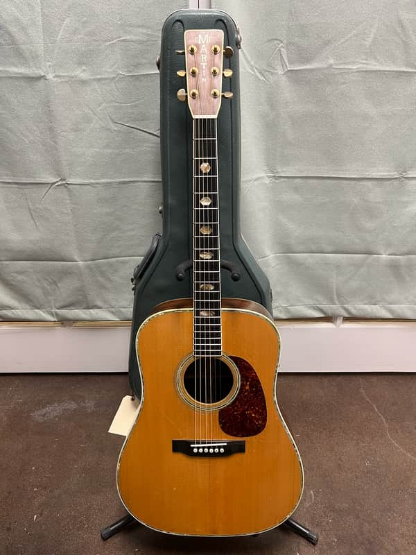
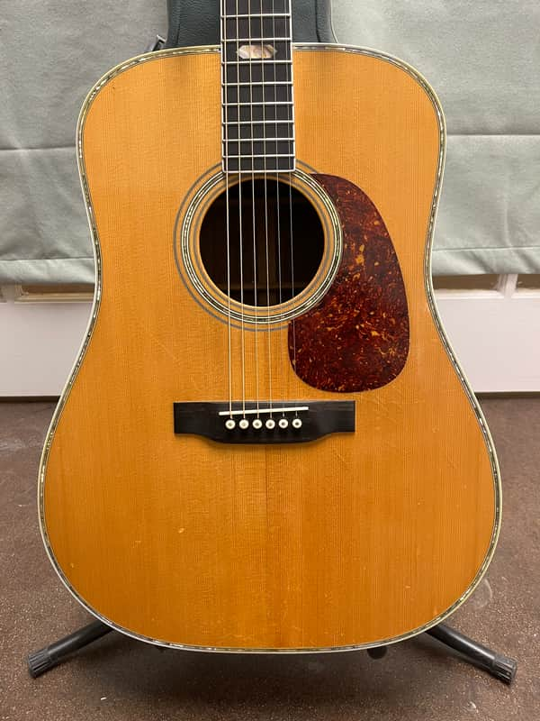
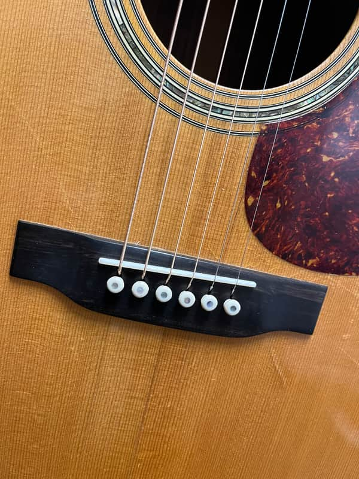
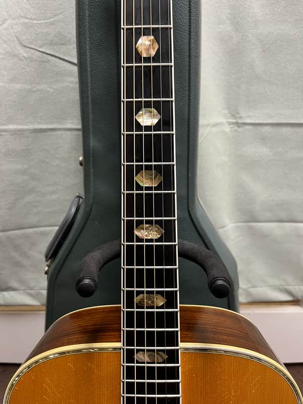
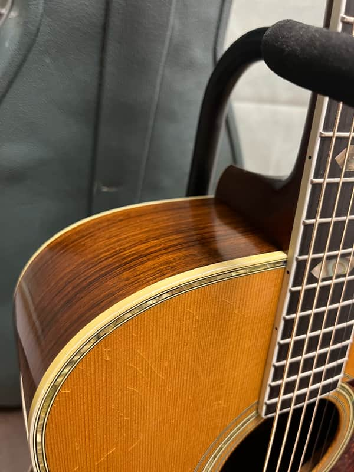
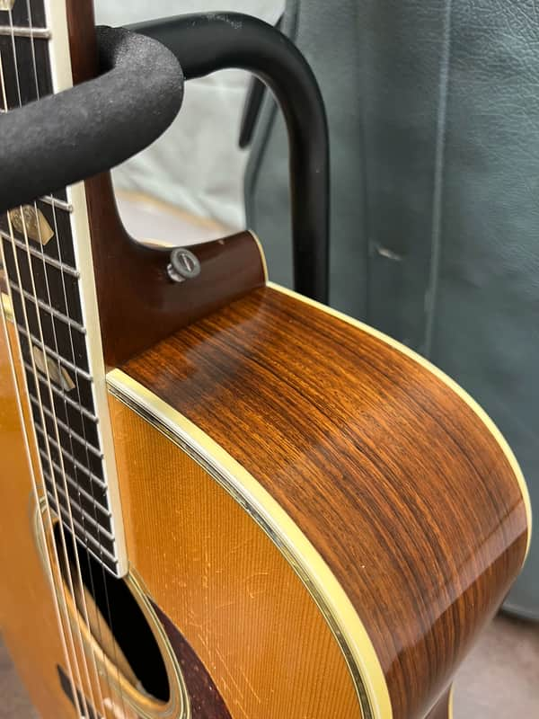
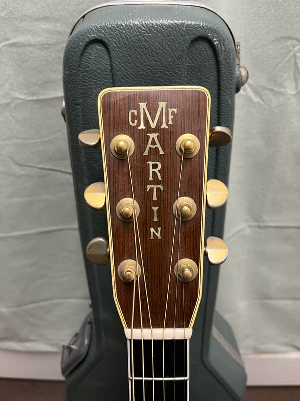
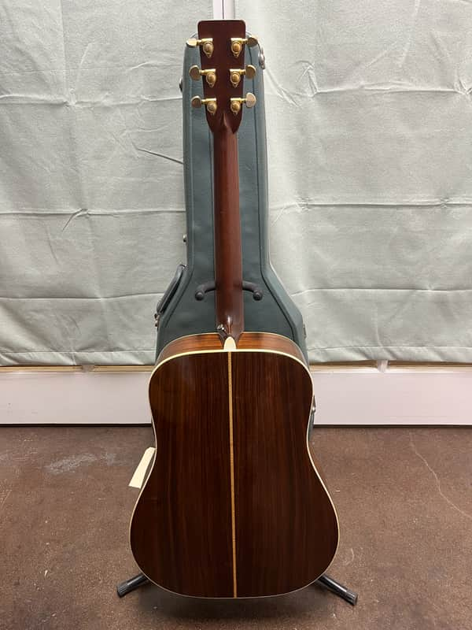
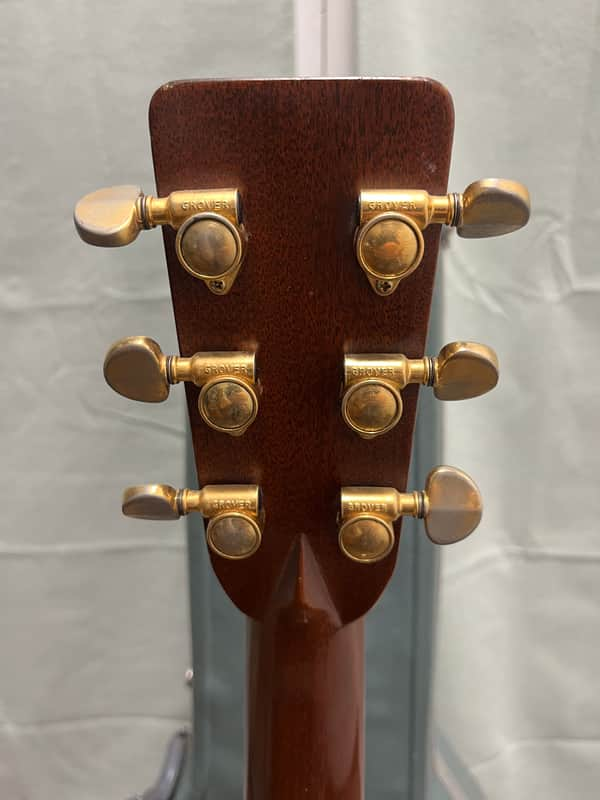
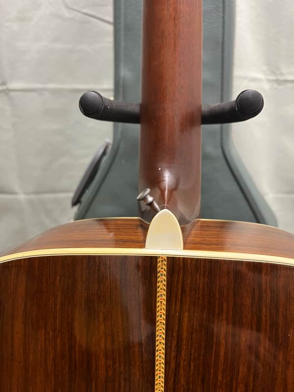
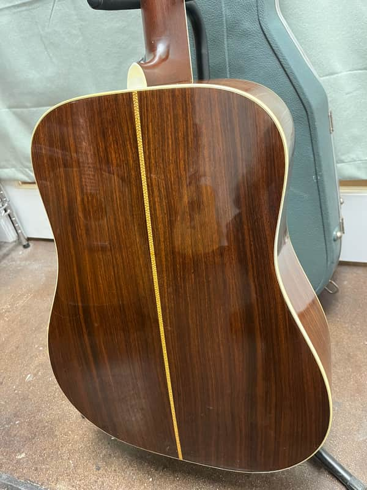
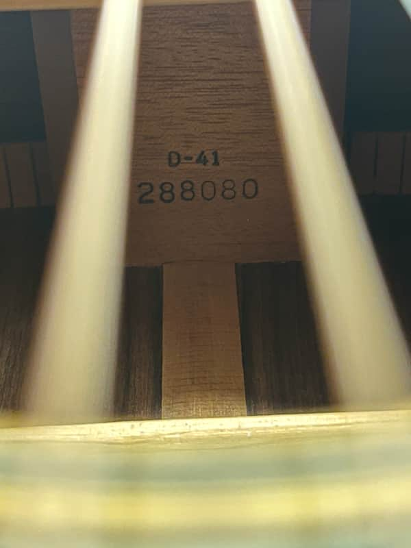